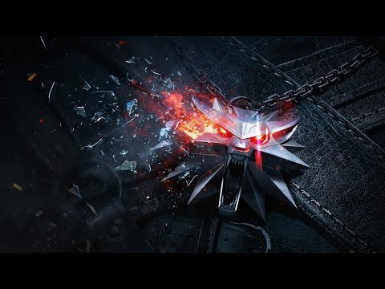

Update: I’ve now spent time with every version of The Witcher 3: Wild Hunt, and when it comes to platform differences, the surprises are few, and divergences are a matter of degrees, not orders of magnitude. The original review copy was for the PlayStation 4 release, which sports a higher resolution than the Xbox One’s version, though without a side-by-side comparison, Xbox One owners should have no reason to bemoan the way the game looks: it’s beautiful on all of its platforms.
In The Witcher 3: Wild Hunt, the sacred is always at war with the profane, and beauty is always at war with blood. The series has always contrasted its world's physical glamor with its intrinsic violence, but never has that contrast been this uneasy, this convulsive. That The Witcher 3 depicts the immediate brutality of battle in great detail is not a surprise; many games fill the screen with decapitated heads and gory entrails. It's the way this incredible adventure portrays the personal tragedies and underhanded opportunities that such battles provide that makes it so extraordinary.

It is more than its thematic turbulence that makes The Witcher 3 extraordinary, actually. Excellence abounds at every turn in this open-world role-playing game: excellent exploration, excellent creature design, excellent combat mechanics, excellent character progression. But the moments that linger are those that reveal the deep ache in the world's inhabitants. In one quest, you reunite two lovers, one of which is now a rotting hag, its tongue lasciviously lolling from its mouth. In another, a corpulent spouse-abuser must find a way to love two different lost souls, each of which test the limits of his affection. Don't worry that these vague descriptions spoil important events: they are simple examples of the obstacles every resident faces. On the isles of Skellige and in the city of Novigrad, there is no joy without parallel sorrow. Every triumph demands a sacrifice.
As returning protagonist Geralt of Rivia, you, too, face the anguish of mere existence, sometimes in unexpected, unscripted ways. The central story, which sees you seeking your ward and daughter figure Ciri, as well as contending with the otherworldly force known as the wild hunt, often forces this anguish upon you. But it was my natural exploration of the game's vast expanses that proved most affecting. At one point, I witnessed a woman sentenced to death, doomed to starve after being chained to a rock. It's a chilling sentence, of course, but it was only later, when I accidentally sailed past the tiny island where her corpse still rested, that the horror of her punishment sunk into my heart. The Witcher 3's story did not script this moment; it was merely a passing detail that might have been lost in the waves or overlooked in favor of the harpies circling overhead. Yet there she was, a reminder that my actions--actions that felt righteous and reasonable as I made them--allowed this woman to rot in this faraway place.

The Witcher 3 is enormous in scope, though "big" is just a descriptor, a statement of neither good nor bad. It is fortunate, then, that The Witcher 3 does not subscribe to the "make a big world and fill it with copy-paste content" design philosophy. Instead, it finds a nigh-perfect sense of balance between giving you things to do and allowing its spaces to breathe. You follow a path not just because there's a question mark on your map, but also because it must lead somewhere new and interesting. The intrigue builds naturally: Every quest is a story of sadness or triumph waiting to absorb you, asking you to make decisions that change the landscape in various ways. You won't always know what the consequences are; some decisions have noticeable, game-altering repercussions, while others barely draw your gaze. But the consequences are there, and you often notice them, even though the game doesn't go out of its way to call attention to them.
The Witcher 3: Wild Hunt is undoubtedly beautiful regardless of platform, though prone to occasional bugs and visual glitches. Solving a quest's subtasks in a particular order caused the game to stick at a perpetual loading screen. Roach decided to stop galloping and lurch ahead in a weird way for minutes on end until I quick-traveled away and returned. Geralt's hair blew in the wind, even when he was indoors. It's jarring should you enter an area after quick-traveling and the citizens have yet to pop in, including quest-givers. Along with occasional console frame rate jitters, these elements may prove distracting to you should they arise, depending on your level of tolerance; even so, Geralt's newest adventure is such an achievement that I was rarely disturbed by the glitches I encountered. These distractions stand out in part because The Witcher 3: Wild Hunt is otherwise incredible and sumptuous; the little quirks are pronounced when they are surrounded by stellar details. And make no mistake: this is one of the best role-playing games ever crafted, a titan among giants and the standard-setter for all such games going forward. Where the Witcher 2 sputtered to a halt, The Witcher 3 is always in a crescendo, crafting battle scenarios that constantly one-up the last, until you reach the explosive finale and recover in the glow of the game's quiet denouement. But while the grand clashes are captivating, it is the moments between conflicts, when you drink with the local clans and bask in a trobairitz's song, that are truly inspiring.